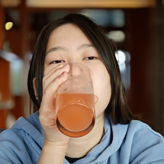
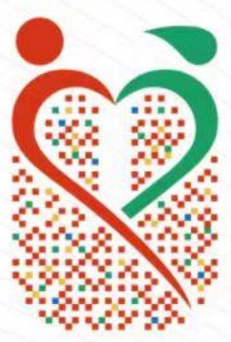
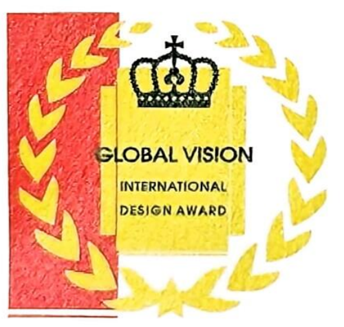
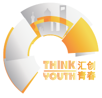

School of Visual Arts
MFA in Interaction Design
I’m Echo, an interaction design student at SVA.
Some ideas become screens. Some become chairs.
Some ask you to clap.
Research, service systems and interfaces
that people can actually try.
Inn-trovert — UX research & service design. What are you doing? — interaction & physical computing. Cityweave — skill-exchange service system. VTT → LRC — subtitle converter.
Experiments in code, motion, and interaction.
Open one. See what happens.
An industrial design background
that still shapes how I prototype.
SubForm — transformable furniture. SHAVI — industrial & app design.
Interior and transport design from the last pages of the portfolio.
Simple Joy — ship interior design. Tideblade — future concept yacht design.

Xiwen YanI’m pursuing an MFA in Interaction Design at the School of Visual Arts in New York, with a background in industrial design. My work moves between digital interfaces, physical experiences, and visual communication.
Download résumé ↓View résumé (PDF) ↗MFA in Interaction Design
Design Intern
Independently designed a task-based journey for a proposed imperial-cuisine exhibition, connecting exhibits with ingredient collection, cooking choices, and personal feedback. Iterated interfaces and proposed merchandise and restaurant collaborations while balancing budget and production constraints.
Visual Design Intern
Designed posters, staff badges, invitations, and interactive check-in stations for the Haiyuji maritime culture market. Worked with a nine-person design team using shared assets to maintain consistency.
B.Eng. in Industrial Design
User research · User flows · Wireframing · Usability testing
Figma · Photoshop · Illustrator · Rhino · Blender · KeyShot · D5 · Arduino
I play with a designer’s eye: how a hit lands on the beat, how a puzzle teaches its rules without words, why one menu feels slow and another instant. Feed the Beat and Serpentine grew out of these notes.
Beyond design: food and lifestyle content on RedNote, including a post with 750K views and 35K likes.
Selected awards & scholarships · 2023–2025
China Creative Challenges Contest
Shanghai Second Prizes · 2024 & 2025
FA International Frontier Innovation Design Competition
China DivisionICAD International Contemporary Youth Art Design Competition
Global Visio International Design

Eastern Creative Star Design
Team projectHuichuang Youth · Shanghai Student Creative Works Exhibition
Product Design
Shanghai Maritime University